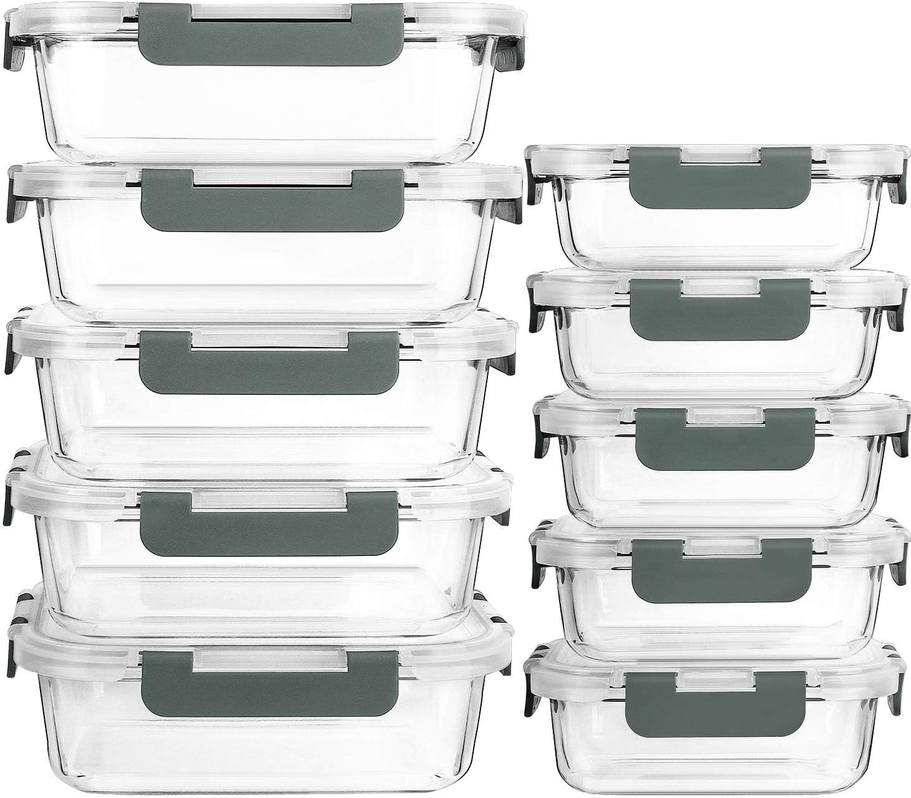
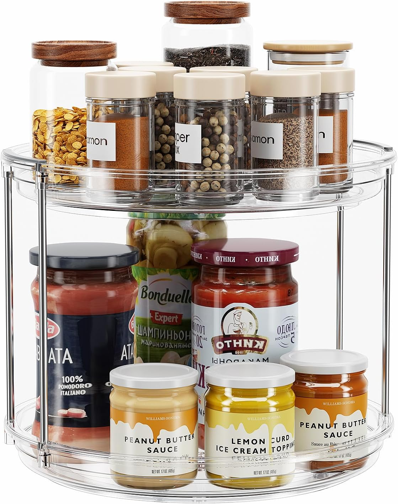
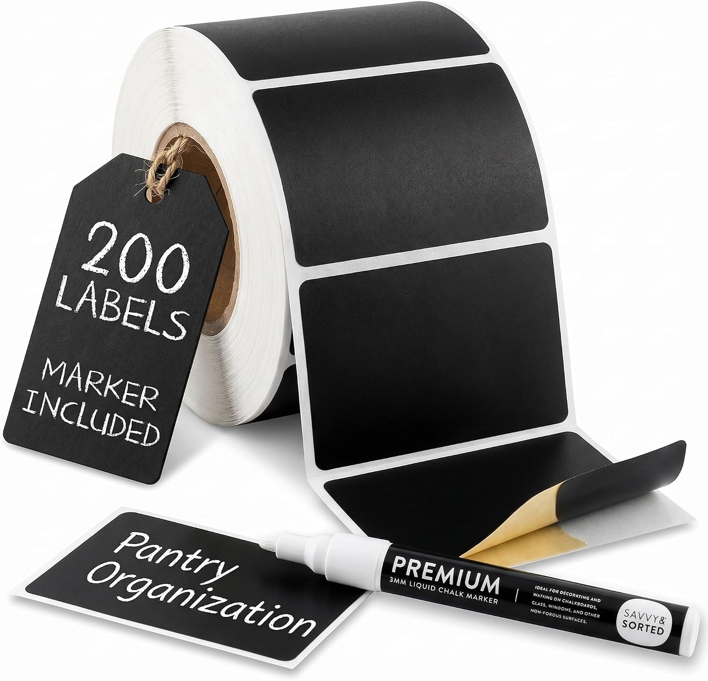
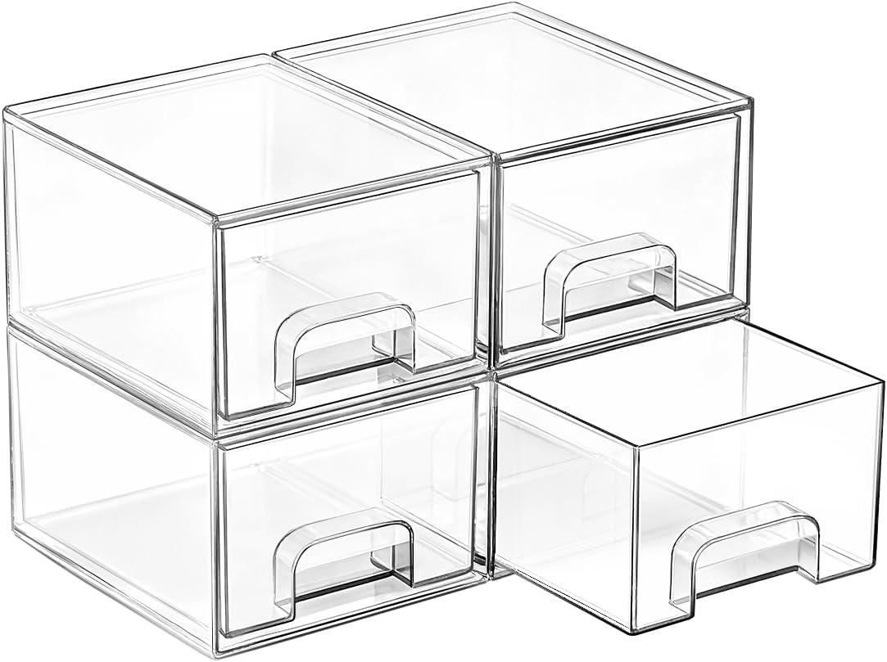
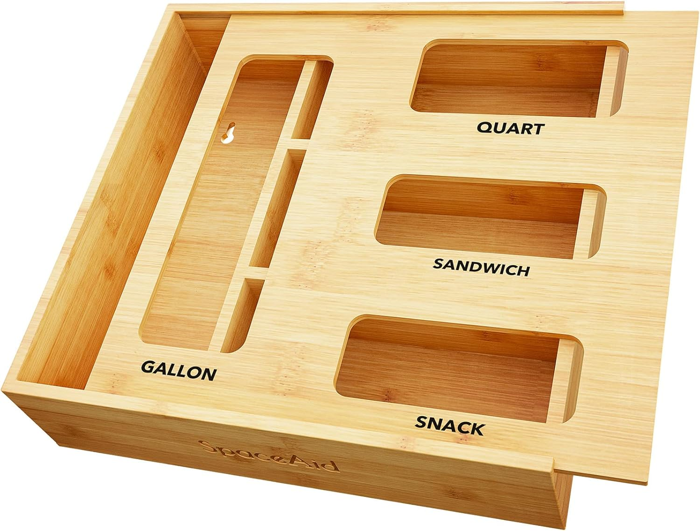
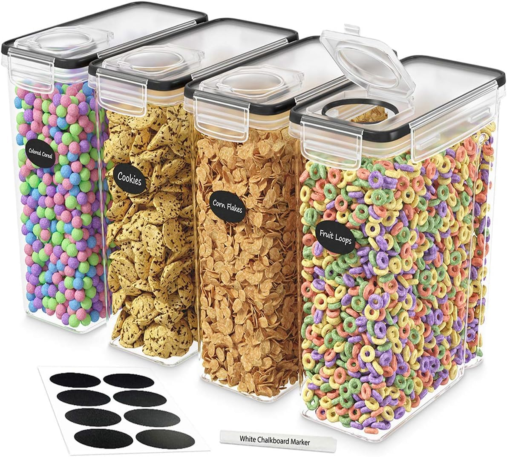
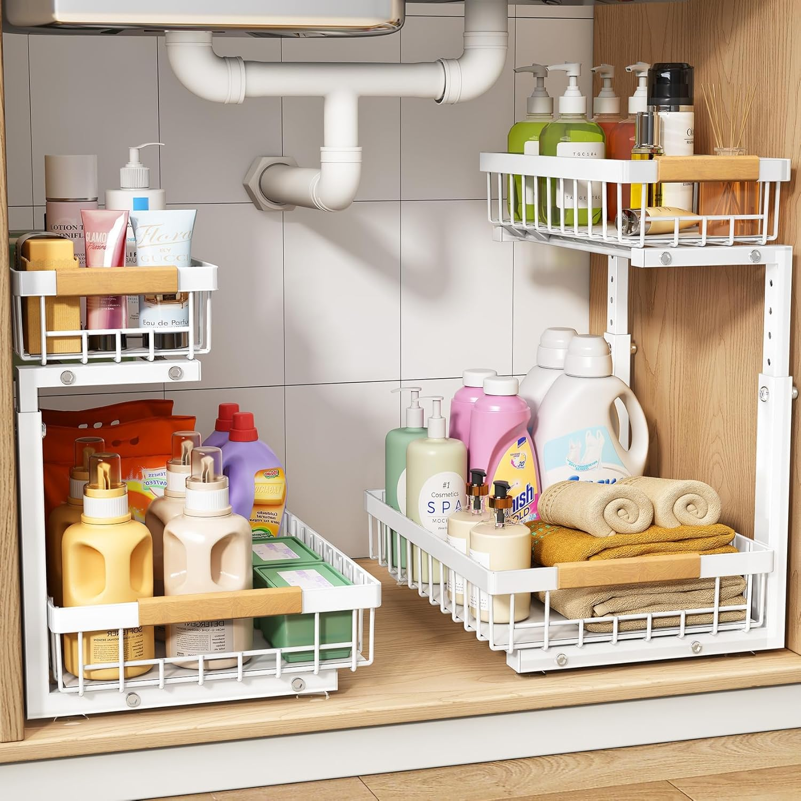
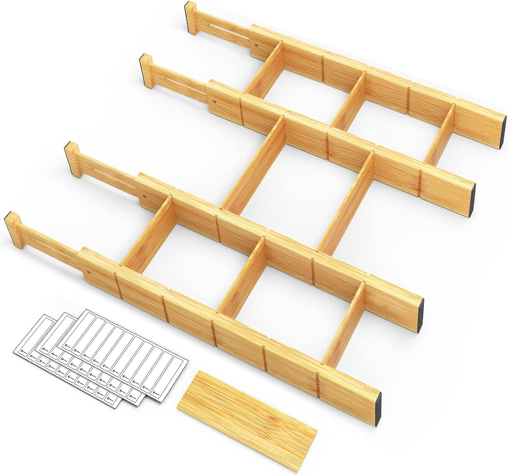
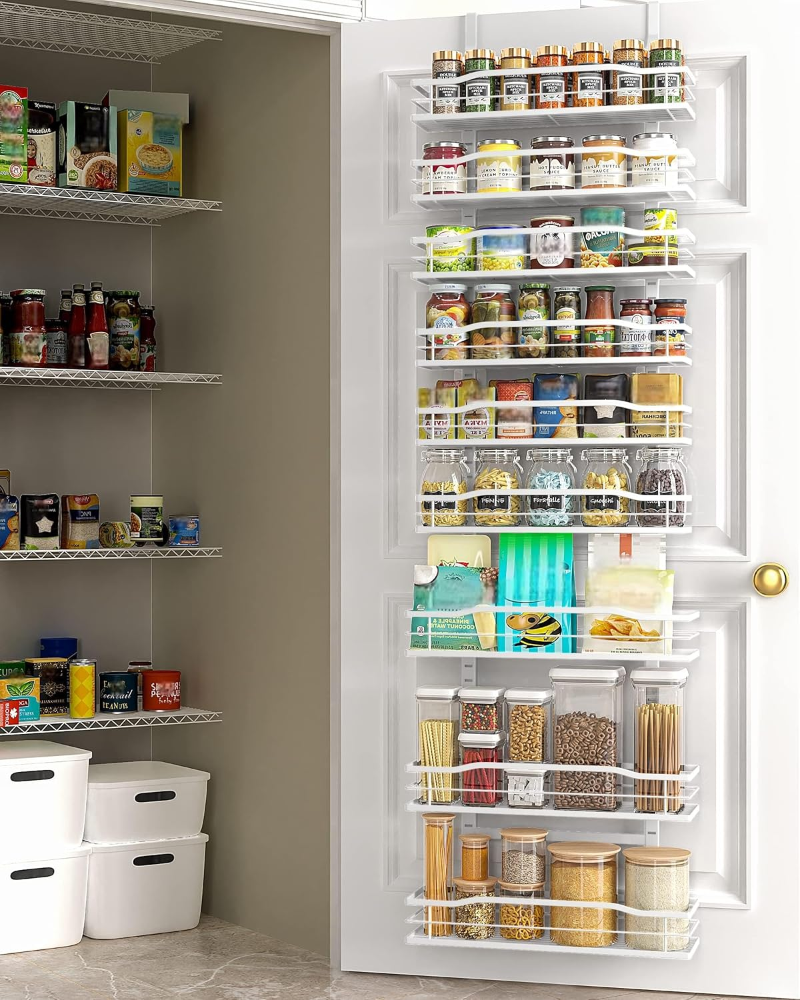
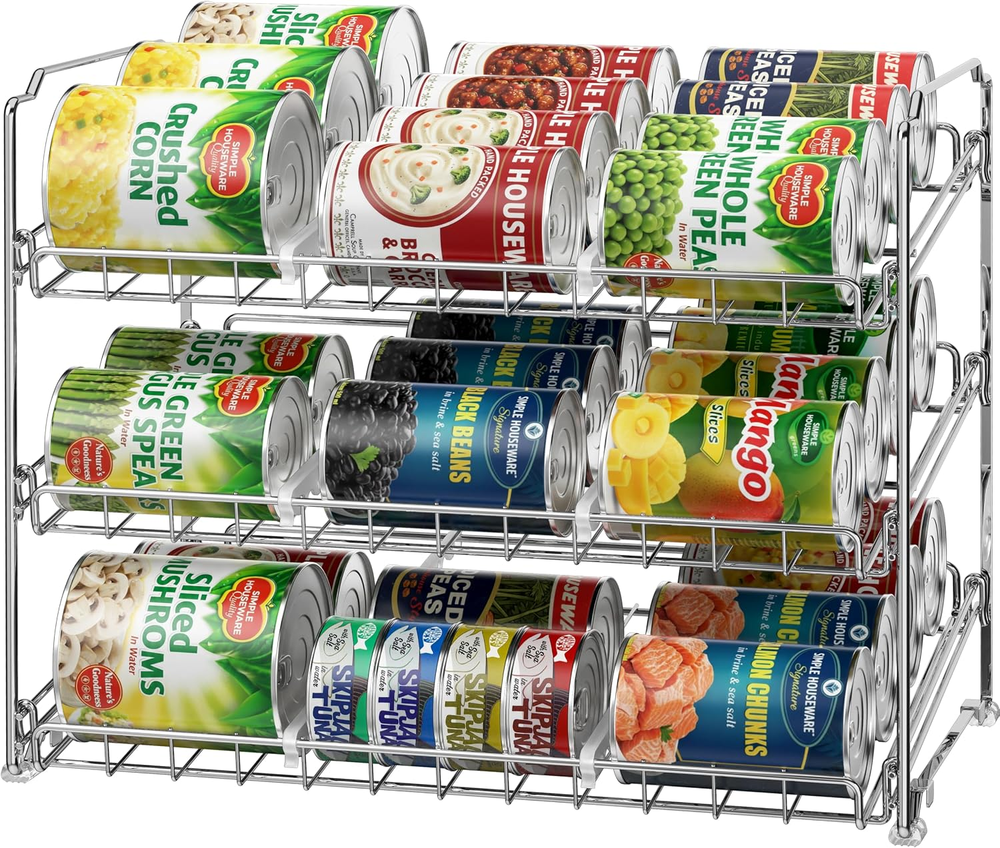

A chaotic pantry can make cooking feel like a chore. If you are tired of digging through cluttered cabinets to find a single spice or dealing with messy drawers, these 10 practical organization essentials will help you create a calm, functional, and beautiful kitchen space.
Table of Contents
- 1. Glass Food Storage Containers
- 2. The 2-Tier Lazy Susan
- 3. Chalkboard Pantry Labels
- 4. Clear Stackable Drawers
- 5. Bamboo Bag Organizer
- 6. Airtight Cereal Dispensers
- 7. Under-Sink Sliding Organizer
- 8. Expandable Bamboo Drawer Dividers
- 9. Over-The-Door Pantry Rack
- 10. Stackable Can Organizer Rack
- Conclusion
1. Glass Food Storage Containers
The single biggest upgrade you can make to your pantry is transferring dry goods into clear, airtight containers. This not only keeps food fresh longer but also lets you see exactly how much you have left at a glance. Glass is highly recommended over plastic because it doesn't stain, hold odors, or degrade over time.

M MCIRCO 10 Pack Glass Food Storage Containers
A 10-pack of borosilicate glass meal prep containers with airtight snap-lock lids and silicone seals. They are microwave, freezer, dishwasher, and oven safe, with a stackable design to save cabinet space.
View on Amazon2. The 2-Tier Lazy Susan
Corners and deep shelves are notorious black holes in the kitchen. A rotating turntable (Lazy Susan) brings items in the back to the front with a simple spin. A 2-tier version is especially useful because it doubles your vertical storage capacity without taking up any extra counter or shelf width.

LAMU 2-Tier Lazy Susan Turntable Organizer
A 9.25-inch, 2-tier rotating organizer with smooth 360-degree ball bearings and sturdy metal connecting rods. Ideal for maximizing vertical space in cabinets or countertops for spices, cans, and pantry items.
View on Amazon3. Chalkboard Pantry Labels
Organization is only sustainable if everyone in the house knows where things go. Uniform labels give your pantry that satisfying, professional "Pinterest-worthy" look while making it easy to find exactly what you need while cooking or baking.

200 Chalkboard Labels with Liquid Chalk Marker
A roll of 200 reusable, removable black chalkboard sticker labels (2.75 x 1.75 inches) with an included white liquid chalk marker. Wipe them clean with a wet towel to reuse—ideal for jars, bins, and containers.
View on Amazon4. Clear Stackable Drawers
Deep shelves often lead to items getting pushed to the back and forgotten. Small, clear acrylic drawers act like mini pull-out shelves, making it incredibly easy to grab snacks, tea bags, or spice packets without having to move a mountain of other items out of the way.

Vtopmart 4 Pack Clear Stackable Storage Drawers
A set of four small, BPA-free shatter-resistant plastic storage drawers (each outer box 7.5 x 6 x 4.4 inches). They stack vertically, have pull-out handles, and include non-slip silicone pads to keep countertops and narrow spaces tidy.
View on Amazon5. Bamboo Bag Organizer
Boxes of Ziploc bags are notoriously awkward to store and often end up jammed in drawers. A dedicated bamboo dispenser keeps your gallon, quart, and snack boxes neatly aligned and allows you to pull them out one at a time, just like a tissue box.

SpaceAid Bamboo Bag Storage Organizer for Drawers
A fully assembled bamboo drawer box with 4 slots designed to hold gallon, quart, sandwich, and snack-sized food storage bags. Includes label stickers to keep your drawer neat and easily identifiable.
View on Amazon6. Airtight Cereal Dispensers
Stale cereal is the worst. Instead of rolling up the inner plastic bag and clipping it, transfer your cereals, granola, or snacks into clear, airtight dispensers. They keep food fresh much longer and give your pantry shelves a clean, uniform look.

DWËLLZA KITCHEN 4-Piece Airtight Cereal Containers
A set of four 4L BPA-free plastic canisters with a 4-sided locking system and silicone seal on the pour spout. Ideal for storing cereal, flour, sugar, and rice while keeping them fresh, dry, and crunchy.
View on Amazon7. Under-Sink Sliding Organizer
The cabinet under the sink is usually a dark, cluttered mess of cleaning supplies. A 2-tier sliding shelf with a C-shaped design fits perfectly around your plumbing pipes, allowing you to pull the bottom shelf out and easily grab what you need without crawling on the floor.

PXRACK 2-Tier Sliding Under Sink Organizer
A heavy-duty, height-adjustable pull-out shelf with a C-shaped design to fit around plumbing pipes. The smooth sliding rails make it easy to access cleaning supplies stored in deep kitchen or bathroom cabinets.
View on Amazon8. Expandable Bamboo Drawer Dividers
Junk drawers and messy utensil trays are a thing of the past with adjustable dividers. They spring-load into place to create custom compartments for your silverware, spatulas, and measuring spoons, keeping everything exactly where it belongs.

SpaceAid Expandable Bamboo Drawer Dividers with Inserts
Adjustable bamboo dividers that expand from 17 to 22 inches to customize kitchen or office drawers. Features a strong spring-loaded design, non-slip rubber pads, and mini inserts for smaller storage compartments.
View on Amazon9. Over-The-Door Pantry Rack
If you have a small kitchen, the back of your pantry door is prime real estate. A heavy-duty, multi-tier hanging rack gives you instant storage for spices, foil wraps, cutting boards, or cleaning supplies without requiring any drilling or tools.

Moforoco 9-Tier Over The Door Pantry Organizer
A heavy-duty metal hanging rack with 9 shelves (3 large, 3 medium, 3 small) that mounts over a standard door with no drilling. Holds spices, jars, and household items, with an installed height of about 6.2 feet.
View on Amazon10. Stackable Can Organizer Rack
Cans rolling around in the pantry or taking up too much shelf space can be frustrating. A gravity-fed can rack automatically rolls the oldest cans to the front (first-in, first-out), ensuring you use them before they expire while keeping your shelves incredibly neat.

Simple Houseware 3-Tier Stackable Can Organizer Rack
A sturdy chrome-coated metal rack that holds up to 36 cans. It features angled shelves that automatically roll cans forward for first-in-first-out access, plus adjustable dividers to accommodate various can sizes.
View on AmazonConclusion
Organizing your pantry doesn't require a massive renovation. By implementing a few smart storage solutions like clear containers, rotating turntables, and custom dividers, you can transform your kitchen into a highly functional space that makes meal prep a joy rather than a chore.
Affiliate Disclosure: As an Amazon Associate, The Organized Nest earns from qualifying purchases. This does not affect the price you pay. We only recommend products we believe will be useful to our readers.